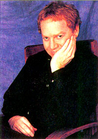

Danny Elfman
By Frank Thompson
Nightmare Before Christmas book, 1993

From the opening notes of his first orchestral film score--Pee-wee's Big Adventure" (1985)--it was clear that Danny Elfman was the freshest, most interesting and eccentric film composer to come along in a great while. Elfman's quirky Nino Rota-esque music was the perfect accompaniment to the skewed vision of Tim Burton and Paul (Pee-wee) Reubens, and he was immediately catapulted into the first rank of contemporary film composers.
Elfman has continued to provide highly memorable scores for Tim Burton's films, composing music that is clever (Beetlejuice), powerful (Batman), and achingly beautiful (Edward Scissorhands). He hasn't just worked with Burton, however; Elfman has composed dramatic, sometimes ironic, music for Warren Beatty's Dick Tracy (1990), John Amiel's Sommersby (1992), Sam Raimi's Darkman (1990), and Martin Breast's Midnight Run (1988), as well as working with directors like Clive Barker and Richard Donner. He has also made his distinctive voice heard on television, providing themes for the Fox animated series The Simpsons, and HBO's horror anthology Tales from the Crypt.
But Elfman's comtribution to Nightmare Before Christmas extends far beyond the musical score. Not only did he compose the music, he also wrote the lyrics--and he provides the singing voice for the lead character, Jack Skellington.
Elfman's involvement began simply enough. "Tim usually tells me about his next film while we're working on the film before," he recollects. "When we were working on Edward Scissorhands he told me about Nightmare. I was very enthusiastic."
"We actually worked on the music before there was a script," Burton says. He and Elfman began meeting at Elfman's home to talk the project over. "I'd say,'This is the emotion in this part of the story," Burton recalls. "It was fun; we'd never worked that way before."
At the time, only the original poem existed, so their collaboration fleshed out the story. And as the story grew, so did Elfman's enthusiasm for the project. In fact Elfman was surprised at how quickly it all began to come together. "I've never worked that fast," he reflects, "but it was very simple and clear. Tim and I know each other pretty well, so there was no need to oververbalize or overanalyze."
The ten songs that resulted from Elfman and Burton's meetings form the backbone of the film; they help define characters and advance the plot. Elfman took his lyrical cue from Burton's poem, sharing Burton's affinity for a "Seussian" type of rhyme. He even took a few of Burton's lines of dialogue and used them in his songs.
"Burton had a lot of images that I really liked," Elfman notes. "For example, he came up with the line, 'Perhaps it's the head that I found in the lake,' I thought, 'Oh, that's wonderful.' So I used it in 'The Town Meeting Song.'"
Upon completing each song, Elfman recorded it in his home studio, mocking up orchestration with keyboards and synthesizers, and singing it himself. "I sang all the voices on the demo," Elfman remembers, "except Sally's (it's in falsetto, so it would have been quite ludicrous). Tim and I stayed up all night in the studio, with me in the singing booth and Tim acting the part of record producer. It was great fun, and we were occasionally prone to fits of hysteria. As I layered all the voices--up to twenty for the Halloween chorus--Tim gave me wild hand gestures indicating his approval or disapproval. It was wonderfully insane."
One character, Oogie Boogie, came to life as a result of Burton and Elfman's memories of the cartoons they watched as children. "Danny and I both loved those old Betty Boop cartoons, where this weird Cab Calloway number comes out of nowhere, for no reason," Burton says. "I remember being young and watching these things coming out of nowhere; it was like I was hallucinating: 'Whoa! What's that?'"
While doing the initial recording of the songs, Elfman realized how attached he was to the songs he had composed for Jack Skellington. "Jack sings most of what he feels," explains Elfman. "All of his emotional transitions are in the context of the songs." In writing the songs, Elfman had, in a sense, brought Jack to life. The more he thought about it, the more he became convinced he could sing them the best: "I strongly related to Jack's character, and I've been through many of the same emotional beats."
After starting his musical career in the off-kilter pop group Oingo Boingo, Elfman finds it a little amusing--and amazing--that he has now written and performed in a full-blown Hollywood musical. "We have really turned the clock back," Elfman chuckles. "This is more like an old-fashioned musical than anything done in the last forty years." Elfman compares the development of Nightmare to the way Gilbert and Sullivan or Rodgers and Hammerstein may have worked years ago. But for Nightmare, unlike most musicals written by songwriting teams, Elfman was both the lyricist and composer. "It was just Tim and I," he explains, "and that made everything very clear and simple."